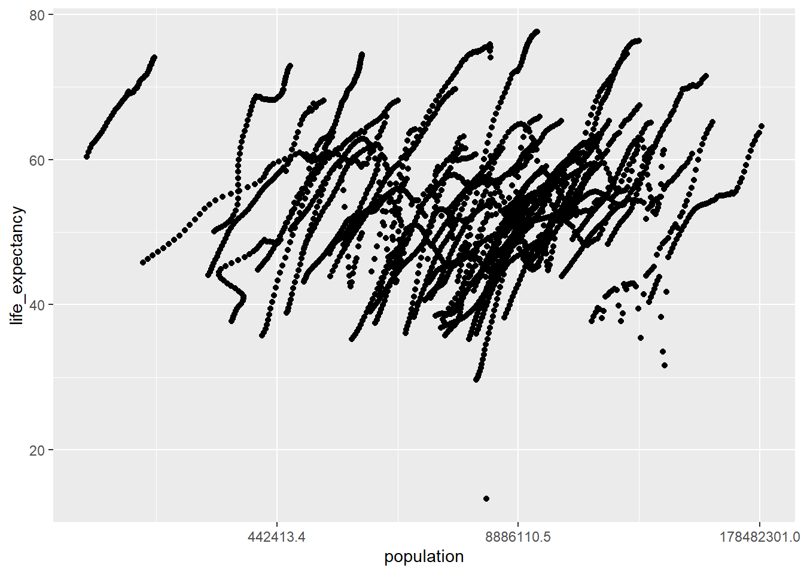

#Load package
library(dslabs)
library(tidyverse)
library(dplyr)R Coding Exercise
This page is the introductory coding exercise in R for this class. I will be working with the dslabs package data to perform data processing, visual plotting, and model fitting.
Receiving and summarizing data
#Look at help file for gapminder dataset
help(gapminder)starting httpd help server ... done#the gapminder dataset contains health and income outcomes for 184 countries from 1960 to 2016.
#get an overview of the data structure
str(gapminder)'data.frame': 10545 obs. of 9 variables:
$ country : Factor w/ 185 levels "Albania","Algeria",..: 1 2 3 4 5 6 7 8 9 10 ...
$ year : int 1960 1960 1960 1960 1960 1960 1960 1960 1960 1960 ...
$ infant_mortality: num 115.4 148.2 208 NA 59.9 ...
$ life_expectancy : num 62.9 47.5 36 63 65.4 ...
$ fertility : num 6.19 7.65 7.32 4.43 3.11 4.55 4.82 3.45 2.7 5.57 ...
$ population : num 1636054 11124892 5270844 54681 20619075 ...
$ gdp : num NA 1.38e+10 NA NA 1.08e+11 ...
$ continent : Factor w/ 5 levels "Africa","Americas",..: 4 1 1 2 2 3 2 5 4 3 ...
$ region : Factor w/ 22 levels "Australia and New Zealand",..: 19 11 10 2 15 21 2 1 22 21 ...#get a summary of data
summary(gapminder) country year infant_mortality life_expectancy
Albania : 57 Min. :1960 Min. : 1.50 Min. :13.20
Algeria : 57 1st Qu.:1974 1st Qu.: 16.00 1st Qu.:57.50
Angola : 57 Median :1988 Median : 41.50 Median :67.54
Antigua and Barbuda: 57 Mean :1988 Mean : 55.31 Mean :64.81
Argentina : 57 3rd Qu.:2002 3rd Qu.: 85.10 3rd Qu.:73.00
Armenia : 57 Max. :2016 Max. :276.90 Max. :83.90
(Other) :10203 NA's :1453
fertility population gdp continent
Min. :0.840 Min. :3.124e+04 Min. :4.040e+07 Africa :2907
1st Qu.:2.200 1st Qu.:1.333e+06 1st Qu.:1.846e+09 Americas:2052
Median :3.750 Median :5.009e+06 Median :7.794e+09 Asia :2679
Mean :4.084 Mean :2.701e+07 Mean :1.480e+11 Europe :2223
3rd Qu.:6.000 3rd Qu.:1.523e+07 3rd Qu.:5.540e+10 Oceania : 684
Max. :9.220 Max. :1.376e+09 Max. :1.174e+13
NA's :187 NA's :185 NA's :2972
region
Western Asia :1026
Eastern Africa : 912
Western Africa : 912
Caribbean : 741
South America : 684
Southern Europe: 684
(Other) :5586 #determine the type of object gapminder is
class(gapminder)[1] "data.frame"Subset data
#pull out data points (rows) related to Africa and assign to object `africadata`
africadata <- filter(gapminder, continent == "Africa")
#check new object
str(africadata)'data.frame': 2907 obs. of 9 variables:
$ country : Factor w/ 185 levels "Albania","Algeria",..: 2 3 18 22 26 27 29 31 32 33 ...
$ year : int 1960 1960 1960 1960 1960 1960 1960 1960 1960 1960 ...
$ infant_mortality: num 148 208 187 116 161 ...
$ life_expectancy : num 47.5 36 38.3 50.3 35.2 ...
$ fertility : num 7.65 7.32 6.28 6.62 6.29 6.95 5.65 6.89 5.84 6.25 ...
$ population : num 11124892 5270844 2431620 524029 4829291 ...
$ gdp : num 1.38e+10 NA 6.22e+08 1.24e+08 5.97e+08 ...
$ continent : Factor w/ 5 levels "Africa","Americas",..: 1 1 1 1 1 1 1 1 1 1 ...
$ region : Factor w/ 22 levels "Australia and New Zealand",..: 11 10 20 17 20 5 10 20 10 10 ...summary(africadata) country year infant_mortality life_expectancy
Algeria : 57 Min. :1960 Min. : 11.40 Min. :13.20
Angola : 57 1st Qu.:1974 1st Qu.: 62.20 1st Qu.:48.23
Benin : 57 Median :1988 Median : 93.40 Median :53.98
Botswana : 57 Mean :1988 Mean : 95.12 Mean :54.38
Burkina Faso: 57 3rd Qu.:2002 3rd Qu.:124.70 3rd Qu.:60.10
Burundi : 57 Max. :2016 Max. :237.40 Max. :77.60
(Other) :2565 NA's :226
fertility population gdp continent
Min. :1.500 Min. : 41538 Min. :4.659e+07 Africa :2907
1st Qu.:5.160 1st Qu.: 1605232 1st Qu.:8.373e+08 Americas: 0
Median :6.160 Median : 5570982 Median :2.448e+09 Asia : 0
Mean :5.851 Mean : 12235961 Mean :9.346e+09 Europe : 0
3rd Qu.:6.860 3rd Qu.: 13888152 3rd Qu.:6.552e+09 Oceania : 0
Max. :8.450 Max. :182201962 Max. :1.935e+11
NA's :51 NA's :51 NA's :637
region
Eastern Africa :912
Western Africa :912
Middle Africa :456
Northern Africa :342
Southern Africa :285
Australia and New Zealand: 0
(Other) : 0 Note that only rows where Africa is listed as the continent are in this dataset (2907 observations)
#Now, pull out the columns for infant mortality & life expectancy and population & life expectancy for African countries and assign to objects
MortExpec <- africadata %>% select(infant_mortality, life_expectancy)
PopExpec <- africadata %>% select(life_expectancy, population)
#view MortExpec object
str(MortExpec)'data.frame': 2907 obs. of 2 variables:
$ infant_mortality: num 148 208 187 116 161 ...
$ life_expectancy : num 47.5 36 38.3 50.3 35.2 ...summary(MortExpec) infant_mortality life_expectancy
Min. : 11.40 Min. :13.20
1st Qu.: 62.20 1st Qu.:48.23
Median : 93.40 Median :53.98
Mean : 95.12 Mean :54.38
3rd Qu.:124.70 3rd Qu.:60.10
Max. :237.40 Max. :77.60
NA's :226 #view PopExpec object
str(PopExpec)'data.frame': 2907 obs. of 2 variables:
$ life_expectancy: num 47.5 36 38.3 50.3 35.2 ...
$ population : num 11124892 5270844 2431620 524029 4829291 ...summary(PopExpec) life_expectancy population
Min. :13.20 Min. : 41538
1st Qu.:48.23 1st Qu.: 1605232
Median :53.98 Median : 5570982
Mean :54.38 Mean : 12235961
3rd Qu.:60.10 3rd Qu.: 13888152
Max. :77.60 Max. :182201962
NA's :51 For both new objects, all observations were used (2907 rows) but each object has two columns (two variables each). All other variables (including country) have been removed.
Plotting the data
#plot life expectancy as a function of infant mortality
ggplot(MortExpec) +
geom_point(aes(infant_mortality, life_expectancy))Warning: Removed 226 rows containing missing values (`geom_point()`).
#| label: fig2
#| fig-cap: Life expectancy vs population size
#plot life expectancy as a function of population size
ggplot(PopExpec) +
geom_point(aes(population, life_expectancy))+
scale_x_continuous(trans = "log")Warning: Removed 51 rows containing missing values (`geom_point()`).
@fig1 show that life expectancy has a negative correlation with infant mortality. As infant mortality increases, life expectancy decreases. The warning message indicated 226 data points could not be plotted.
@fig2 shows that life expectancy has a positive correlation with population size. As population increases, life expectancy increases. Note that some data points seem to trend together; this is because the grouped data is from the same country over multiple years. The warning message indicated that 51 points could not be plotted.
Data cleaning
As noted in the plotting stage, there are some missing data points for some countries for some years. Let’s try to find the years with missing data.
#find years with missing data using `africadata`